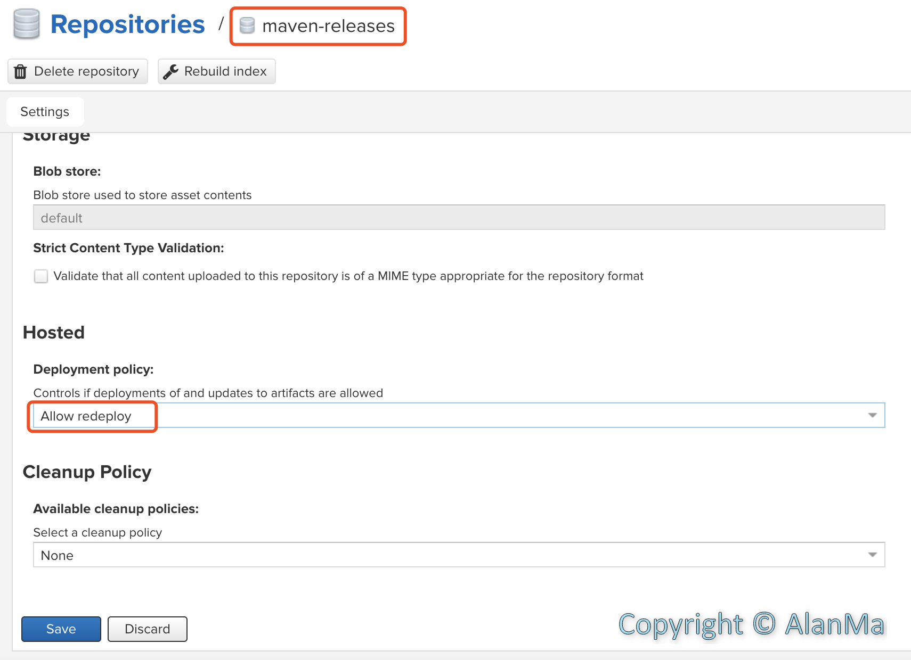

概述
Nexus简介
Nexus作为Maven的私服仓库被大家所知，主要用来管理maven工程中的依赖包，开发人员直接使用公共的Maven远程中心仓库来下载依赖包时，会遇到比如镜像不稳定导致无法成功下载依赖包，依赖包属于公司内部项目无法在中心仓库找到，开发人员众多时下载更新依赖包会严重影响办公网络速度，某些特定公司入银行核心系统员工开发计算机无法连接外网等问题。所以在日常开发中，搭建Nexus非常有必要，可以统一管理项目的依赖包，并且私服搭建在内网环境，可以保证下载更新速度。
另外Nexus最好建立在公司内网环境，如果搭建在外网云环境，就起不到快速同步依赖包的作用了，相当于自己建了一个”远程中心仓库“，并且开发环境和生产环境要隔离开做好权限管理，同时要修改admin账户默认密码，之前见过一个小公司在公网环境部署nexus，使用默认用户密码，没有限制访问IP，而且jar包没有版本管理，都是同一个版本号，也没有进行代码混淆，这样很容易造成依赖包被替换上传至nexus从而造成严重的生产事故。
环境信息
CentOS 7
JDK 8
Nexus 3.16.2
Maven 3.5.1
基础概念
仓库类型
hosted(宿主仓库)：本地仓库，通常我们会部署自己的构件到这一类型的仓库；
proxy(代理仓库)：代理仓库，它们被用来代理远程的公共仓库，如maven中央仓库；
group(仓库组)：用来合并多个hosted/proxy仓库；
virtual(虚拟仓库)：基本用不到，重点关注上面三个仓库的使用。
默认仓库
maven-central：maven中央库，默认从https://repo1.maven.org/maven2/拉取jar；
maven-releases：私库发行版jar，初次安装请将Deployment policy设置为Allow redeploy(可重复发布)；
maven-snapshots：私库快照（调试版本）jar；
maven-public：公共仓库，把上面三个仓库组合在一起对外提供服务，在本地maven配置settings.xml或项目pom.xml中使用。
Nexus配置
创建用户
nexus不建议使用root用户启动，我们在此创建一个用户mxw默认分组到mxw，并切换用户
1
2
3
4
5
6
| #创建用户
useradd -m mxw
#设置密码
password mxw
#切换用户
su mxw
|
下载Nexus
1
2
3
4
5
6
| #下载压缩包
wget https://download.sonatype.com/nexus/3/latest-unix.tar.gz
#解压
tar -zxvf latest-unix.tar.gz
#建立软连接
ln -s nexus-3.16.2-01 nexus
|
修改端口
1
2
| #修改nexus/etc/nexus-default.properties文件
application-port=8087
|
修改Max File
nexus推荐系统最大开启文件数为65536
1
2
3
4
5
6
7
8
9
| #/etc/security/limits.conf
root soft nofile 65536
root hard nofile 65536
* soft nofile 65536
* hard nofile 65536
#/etc/security/limits.d/20-nproc.conf
* soft nproc 65536
root soft nproc unlimited
|
启动Nexus
1
2
| cd nexus/bin
nexus start
|
Nexus常用命令
1
2
3
4
5
6
7
8
| #查看状态
nexus status
#启动
nexus start
#关闭
nexus stop
#重启
nexus restart
|
访问首页
[http://yoururl:8087]
默认登录账号如下（首次登录后建议修改密码）。
用户名：admin
密 码：admin123
增加代理源
新增代理仓库
设置—Repositories—Create repository—maven2(proxy)
Name：Proxy-Aliyun
Remote storage：http://maven.aliyun.com/nexus/content/groups/public
Not found cache TTL：288000
常用代理源如下表，需要按上面方法逐个添加。
1
2
3
4
5
6
7
8
9
10
11
12
13
14
15
16
17
18
19
20
| #aliyun
http://maven.aliyun.com/nexus/content/groups/public
#apache_snapshot
https://repository.apache.org/content/repositories/snapshots/
#apache_release
https://repository.apache.org/content/repositories/releases/
#atlassian
https://maven.atlassian.com/content/repositories/atlassian-public/
#central.maven.org
http://central.maven.org/maven2/
#datanucleus
http://www.datanucleus.org/downloads/maven2
#maven-central
https://repo1.maven.org/maven2/
#nexus.axiomalaska.com
http://nexus.axiomalaska.com/nexus/content/repositories/public
#oss.sonatype.org
https://oss.sonatype.org/content/repositories/snapshots
#pentaho
https://public.nexus.pentaho.org/content/groups/omni/
|
添加至公共组
将上一步建立的代理仓库添加至maven-public，并调整顺序，调低默认仓库的优先级。
maven-releases可重复发布
将maven-releases设置为可重复发布，方便再开发中调试bug。

Nexus升级为Https
nexus默认使用http协议，可以在nginx配置证书，使用nginx做反向代理实现https访问nexus，，具体证书配置方法详见后续《nginx系列文章》。
Nexus使用
Maven配置
在开发期间主要发布到maven-releases和maven-shapshots两个仓库中，根据版本号后缀-SNAPSHOT或-RELEASES来区分仓库，若没有后缀则默认发布到maven-releases。url从仓库配置界面中setting—url属性复制。
修改setting.xml
1
2
3
4
5
6
7
8
9
10
11
12
13
14
15
16
17
18
19
20
21
22
23
24
25
26
27
28
29
30
31
32
33
34
35
36
37
38
39
40
41
42
43
44
45
46
47
48
49
50
51
52
53
54
55
56
57
58
59
60
61
62
63
64
65
66
67
68
69
70
71
72
|
<servers>
<server>
<id>releases</id>
<username>admin</username>
<password>admin23</password>
</server>
<server>
<id>snapshots</id>
<username>admin</username>
<password>admin123</password>
</server>
</servers>
<profiles>
<profile>
<id>nexus</id>
<repositories>
<repository>
<id>nexus</id>
<name>Public Repositories</name>
<url>http://XXXXXX:8087/repository/maven-public/</url>
<releases>
<enabled>true</enabled>
</releases>
</repository>
<repository>
<id>central</id>
<name>Central Repositories</name>
<url>http://XXXXXX:8087/repository/maven-central/</url>
<releases>
<enabled>true</enabled>
</releases>
<snapshots>
<enabled>false</enabled>
</snapshots>
</repository>
<repository>
<id>release</id>
<name>Release Repositories</name>
<url>http://XXXXXX:8087/repository/maven-releases/</url>
<releases>
<enabled>true</enabled>
</releases>
<snapshots>
<enabled>false</enabled>
</snapshots>
</repository>
<repository>
<id>snapshots</id>
<name>Snapshot Repositories</name>
<url>http://XXXXXX:8087/repository/maven-snapshots/</url>
<releases>
<enabled>true</enabled>
</releases>
<snapshots>
<enabled>true</enabled>
</snapshots>
</repository>
</repositories>
<pluginRepositories>
<pluginRepository>
<id>plugins</id>
<name>Plugin Repositories</name>
<url>http://XXXXXX:8087/repository/maven-public/</url>
</pluginRepository>
</pluginRepositories>
</profile>
</profiles>
<activeProfiles>
<activeProfile>nexus</activeProfile>
</activeProfiles>
|
项目工程配置
新建两个测试工程malluser和mallaccount，且malluser引用mallaccount
组件工程（mallaccount）
修改pom.xml
修改组件工程的pom.xml，id必须与maven setting.xml中server的id一致
1
2
3
4
5
6
7
8
9
10
11
12
13
14
15
16
17
18
19
20
21
22
23
24
25
26
27
28
29
30
31
32
33
34
|
<groupId>com.mxw.test.mall</groupId>
<artifactId>mall-account</artifactId>
<version>1.0-SNAPSHOT</version>
<repositories>
<repository>
<id>nexus</id>
<name>Public Repositories</name>
<url>http://XXXXXX:8087/repository/maven-public/</url>
<releases>
<enabled>true</enabled>
</releases>
<snapshots>
<enabled>true</enabled>
</snapshots>
</repository>
</repositories>
<distributionManagement>
<repository>
<id>releases</id>
<name>Nexus Release Repository</name>
<url>http://XXXXXX:8087/repository/maven-releases/</url>
</repository>
<snapshotRepository>
<id>snapshots</id>
<name>Nexus Snapshot Repository</name>
<url>http://XXXXXX:8087/repository/maven-snapshots/</url>
</snapshotRepository>
</distributionManagement>
|
部署组件
Nexus浏览组件
Browser—maven snapshots
引用工程（malluser）
修改pom.xml
1
2
3
4
5
6
7
8
9
10
11
12
13
14
15
16
17
18
19
20
21
22
23
24
25
26
27
28
29
|
<groupId>com.mxw.test.mall</groupId>
<artifactId>mall-user</artifactId>
<version>1.0-SNAPSHOT</version>
<dependencies>
<dependency>
<groupId>com.mxw.test.mall</groupId>
<artifactId>mall-account</artifactId>
<version>1.0-SNAPSHOT</version>
</dependency>
</dependencies>
<repositories>
<repository>
<id>nexus</id>
<name>Public Repositories</name>
<url>http://XXXXXX:8087/repository/maven-public/</url>
<releases>
<enabled>true</enabled>
</releases>
<snapshots>
<enabled>true</enabled>
</snapshots>
</repository>
</repositories>
|
成功引入依赖
malluser已成功引入依赖工程mallaccount。